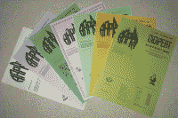

Australian
Amateur
Packet
Radio
Association

DIGIPEAT
The quarterly journal of the Australian Amateur Packet Radio Association
Each quarterly issue of Digipeat contains details of AAPRA supported Digipeaters, a list of active ROSE switches and a list of current AAPRA members together with their QTH, Home BBS and ROSE switch number.
The editor always welcomes submission of articles, tidbits and network updates for publication.
Email the editor and see your name in print!
Our regular correspondent Aunt Harriet may also be contacted.
Contents of DIGIPEAT issues 52 to 65
|
Oct-Dec 97 |
Jan-Mar 98 |
Apr-Jun 98 |
Jul-Sep 98 |
Oct-Dec 98 |
Jan-Mar 99 |
Apr-Jun 99 | Jul-Sep 99 | Oct-Dec 99 | Jan-Mar 00 | Apr-Jun 00 | Jul-Sep 00 | Oct-Dec 00 | Jan-Mar 01 |
Back issues of DIGIPEAT are available from AAPRA - even issues that are not listed here.
Price per issue: $5 including postage. Contact the Secretary.
January - March 2001
NOTICE OF SIXTEENTH ANNUAL GENERAL MEETING OF AAPRA
Treasurer's ReportPresident's Report
IN THE ROSE GARDEN
Why is Packet thriving and evolving in Germany when it seems to be doing the reverse in Australia?SOFTWARE LIBRARY UPDATE
Spectrogram, a dual channel audio spectrum analyser has been added to the shareware library and the AAPRA CD-ROM. Updates to several other programs.TAPR PRESIDENT'S OZ VISIT
John Ackermann's positive comments about VK amateurs after his visit to Australia.CLOVER II
Details of another new digital mode.WYONG 2000 Photo Gallery.
Six photos of the AAPRA stand members, including VK2DP receiving his YAM modem prize.{kind=link}
DIGITAL RADIO IN THE NEW MILLENNIUM
A thought provoking article by John Ackermann President of TAPR. The changes that computers have made and will continue to make in Amateur Radio.PADDING AROUND
The International Space StationAPRS on the cheap
APRS "LIVE" on the net
High speed packet on 2.45 GHz.
AUNT HARRIET
Aunty has had a touch of the vapours but should be back on deck next issue.October - December 2000
IN THE ROSE GARDEN
Why packet networks grow in some countries and shrink in others.SOFTWARE LIBRARY UPDATE
New shareware includes AirMail, Stream together with updates for several other programs and Introduction to Packet Radio by WB9LOZ..COMPUTER SEX
By which gender should computers be addressed?MFJ1270B HEARING AID
JMP-J link setting may affect the reliability of connections with the MFJ1270B TNC.MFSK DX MODE
A new weak signal DX mode for Radio Amateurs using a PC, Sound Card and STREAM shareware.AUNT HARRIET
Getting really comfortable with Packet procedures before going "live" On-Air.July - September 2000
IN THE ROSE GARDEN
Chopped 70 cm band requires changes to link transmitters & receivers.SOFTWARE LIBRARY UPDATE
New shareware includes IrfanView32, PureVoice Converter and T4, a DOS terminal program together with updates for several other programs.AAPRA CD-ROM
Introducing the NEW AAPRA Shareware CD-ROM which contains the complete collection of shareware and then some.BLAKPAK BLAKWEEK
A cautionary tale about DB9/DB25 adaptors when used for BlakPak style modems.LARGE-SCALE PACKET RADIO NETWORKING
Why we need large-scale networks and how to get them!AUNT HARRIET
Sending and receiving SPEECH packets using Pure Voice.NEL Continuity & Coil TESTER
A simple continuity tester that won't destroy sensitive components.April - June 2000
IN THE ROSE GARDEN
Something stirring in Tamworth. FPAC Rose Directory.SOFTWARE LIBRARY UPDATE
New Shareware includes Digipan, Radio Mirror, UI View, & World Time Clock together with updates for several other programs.
Flexnet for Remote Nodes
Although dealing with the installation of a Flexnet Node much is equally applicable to FPAC/ROSE Nodes.Future of the Amateur Service
Extracts from a speech by Dale Hatfield (W0IFO) regarding the potential for Software Defined Radios to bring about a new era of amateur experimentation.AUNT HARRIET
Aunty continues her investigation of Cousin Hortense's problems trying to use Winpack and Packet Engine with a BayCom style modem.
January - March 2000
NOTICE OF FIFTEENTH ANNUAL GENERAL MEETING OF AAPRA
President's ReportTreasurer's Report
IN THE ROSE GARDEN
A sad tale of the pitfalls in making replacement RS232 cables.SOFTWARE LIBRARY UPDATE
One new item in the library, JVCOMM32 1.00 and 7 updates reviewed.
THE NEED FOR SPEED
An interesting approach to packet bulletin distribution incorporating HTML without the need for higher speeds.DIGITAL DICHOTOMY
Why is it "OK" to use the telephone network for Amateur Packet messages but NOT 'OK" for voice contacts?AUNT HARRIET
Aunty's cousin, Hortense has some fun trying to install some software she picked up at Wyong.
October - December 1999
IN THE ROSE GARDEN
As BBSs are the largest users of the Network should they set it up and maintain it? Are HF links the answer?EMPOWER YOUR FM92
Review of the excellent UDM900 firmware EPROM replacement for the Philips FM92 VHF Transceiver.WICEN OPERATIONS ON PACKET
What part can packet play in emergency communications?SOFTWARE LIBRARY UPDATE
11 updates of the AAPRA Shareware Library detailed.
CLEANING UP THE MFJ 1270B
Investigation of the electromagnetic radiation from the MFJ1270B and how to reduce it.
THE NEW YAM MULTISPEED MODEM
Details on the NEW AAPRA 9600bd modem - it's history, features and functional description.
ALIGNMENT OF THE MFJ1270B & 1274
A full procedure for this popular TNC.
AUNT HARRIET
The UPS and DOWNS of Packet Radio.
July - September 1999
IN THE ROSE GARDEN
Several interesting photographs showing the "inside" of VK2RNS.SOFTWARE LIBRARY UPDATE
Update information for 7 shareware programs.
Packet Radio Goes Bush
VK2KFA describes the portable packet equipment he uses on WICEN activities.
Setting Your TNC's Audio Drive Level
A detailed article on the WHY and the HOW to setting up your TNC's audio drive level accurately. In some cases this can almost double the range of you packet station.
AUNT HARRIET
Aunty muses on where packet has been and where it's going.
April - June 1999
IN THE ROSE GARDEN
Barry is looking for some PC monitors which will fit a 19 inch rack to tidy up the VK2RNS installation. VK2RNS now has the potential for 8 ports running FPAC Rose.SOFTWARE LIBRARY UPDATE
One new title and four updates this issue.
HELLSCHREIBER
A detailed description of this fascinating digital mode by ZL1BPU. An "Old" mode becomes easy to implement thanks to the modern PC.
AAPRA MEMBERSHIP DATABASE
Tables showing where AAPRA member are, which computer, TNC and software they use.
HIGH SPEED DATA ON POWER LINES
Using the electricity power lines for internet connection. Can it happen here and how will it affect amateurs.
AUNT HARRIET
Aunty untangles her TNC!
WHAT'S THIS MFJ
Geoff's experiences "fine tuning" an MFJ-1270B
January - March 1999
IN THE ROSE GARDEN
Suggestions for BBS traffic frequencies
NOTICE OF ANNUAL GENERAL MEETING
The AAPRA AGM will be held at 11AM on Sunday, 2nd May 1999 at 59 Westbrook Avenue, Wahroonga, NSW
AAPRA Income and Expenditure Statement
President's Report
Treasurer's Report
Software Library Update
WYONG 1999 Photo Page
BAYCOM/PENTIUM PROBLEM
Another possible reason and solution
TWIN SPEED 1200/9600 OPERATION WITH ONE RADIO
Gerard describes his dual speed setup which has been running for 6 years
MFJ TNCs
Details on MFJ TNCs available from AAPRA
PSK31
Information on the new digital mode which is spreading like wildfire on the HF bands
Aunt Harriet
Aunty discusses some odd PMS problems
October - December 1998
IN THE ROSE GARDEN
The problems that befall ROSE switches
The NEW AAPRA Web Site
Launch of AAPRA web page
URL, navigation, contents and use
Site history and development
e-mailing AAPRA committee members
Future developments
PACKET PERCEPTIONS
VK2BQ comments on the AAPRA website, BBSs and packet versus the Internet
Is there a silent revolution on your local BBS ?
Software Library Update
New Titles
[PicturePacket 1.12](Win95/NT) 2/12/98 by KW7KW
Twas the Night Before Christmas
Christmas theme PC Version
Aunt Harriet
Vintage packet programs hit problems on Pentium PCs?
BlakPak mod
Simple mod improves sensitivity
July - September 1998
In the ROSE Garden.
ROSE switches and FPAC
VK2XVW Weather Station
NEW BLAKPAK 1200bd MODEM
USING A BayCom MODEM WITH
WINDOWS 95
WINTNC
WinPack and Packet Engine
FM92 Revisited.
More on the
modification of this transceiver based on experience with several different
models.
Battery Back-up and a simpler mod for 9600Bd operation.
Possible TCM3105 replacement
Aunt Harriet
Hints for Packet beginners.
April - June 1998
In the ROSE Garden
Pactor Plot
AAPRA and Y2K
20th ANNIVERSARY OF AMATEUR PACKET RADIO
SOFTWARE LIBRARY UPDATE
New Titles
[APRS 8.17] (DOS) 10/6/98 by Bob Bruninga, WB4APR
[WinAPRS 2.2.0] (Win) 15/5/98 by Mark and Keith Sproul
[PC/FlexNet 3.3g] (DOS) by Gunter Jost, DK7WJ
A SIMPLE LITTLE TASK
Problems with a 12V plug pak that wants to be a 12W transmitter !
HIGH SPEED PACKET WITH THE FM92
Modifications to the FM92 for
9600Bd packet on 2 Metres
Full adjustment and tuning details
Aunt Harriet
The Internet and the future of Amateur Radio
January - March 1998
In the ROSE Garden
Problems with a ROSE switch
transmitter
A novel UHF power meter used to track fault
Notice of AAPRA AGM
President's Report
Treasurer's Report
Shareware Library Update
No new titles but LOTS of updates
Beginners Corner
Equipment
Why call it Packet
The 1997 DCC in Baltimore
Darryl VK2TDS reports on his visit to the Digital Communications Conference in USA and enthuses about APRS or the Automatic Position Reporting System
Aunt Harriet
Mysterious Happenings with LCALLS
HAPN-T
TNC200 Modifications
October - December 1997
In the ROSE Garden
A progress report on the implementation of FPAC in ROSE Switches
Software library update
New Titles
[Sally 1.07] (Win) 24/11/97 by Ted Harrison
G8NPF
[TstHWin 1.10] (Win95) 29/11/97 by Mario
Travaglino IK1GKJ
What is Shareware?
Sydney ROSE Internet Gateway
AAPRA at the Wyong Field Day 1998
The next Wyong Field Day will be different for AAPRA !
Beginners Corner
Extracts from "An Introduction to Packet Radio"
Aunt Harriet
PMS Commands.
Missing in Action
A regular feature in Digipeat is the list of
equipment stolen from AAPRA supported Digipeaters.
It is repeated here in the hope that maybe you can help us trace these missing items.
YAESU UHF Transceiver Model FT712 Serial No. 8C050376
PHILIPS VHF Transceiver Model FM828 Serial No. 45459
PacComm Tiny2 TNC Serial No. T6782
PacComm Tiny2 TNC Serial No. T6784
PacComm Tiny2 TNC Serial No. T5359
POWER SUPPLY Serial No. FRY1501
PacComm DR200 TNC Serial No. 2231
Last update to this page: 3/6/01